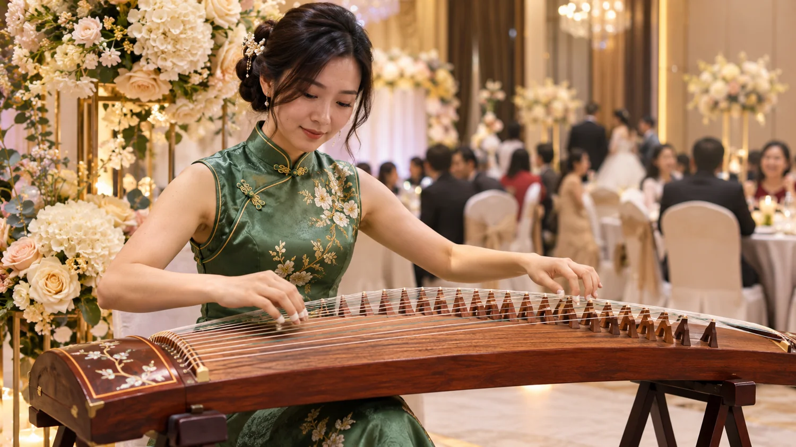

Guzheng Performance for Weddings in Malaysia: An Elegant Sound for Your Special Day

A beautiful wedding is often remembered for the little details: the flowers, the first entrance and the music that welcomes guests. A live guzheng performance adds a distinctive Chinese musical character to those moments. Its flowing melodies create an elegant atmosphere that works beautifully in hotel ballrooms, intimate wedding receptions and traditional Chinese banquet settings across Malaysia.
Rather than choosing music simply to fill the silence, couples can use the guzheng to give their celebration a personality of its own.
Why the Guzheng Suits Wedding Receptions
The guzheng is a traditional Chinese plucked-string instrument recognised for its bright, expressive sound. Its delicate notes and sweeping glissandos can evoke a sense of romance, nostalgia and celebration without competing with conversation.
It is particularly appealing for couples who would like to incorporate Chinese heritage into a modern wedding. The instrument looks as graceful as it sounds, making live music part of the overall setting rather than just an audio soundtrack.
Its versatility also makes it possible to explore instrumental arrangements of classic Chinese melodies or more familiar modern songs. Learn more about the instrument's cultural significance in this article on why the guzheng represents Chinese traditional music.
Beautiful Moments for Live Guzheng Music
Different parts of a wedding call for different kinds of music. You do not need a performance throughout the entire evening to make an impact.
| Wedding moment | Suggested musical atmosphere |
|---|---|
| Guest arrival and registration | Gentle, welcoming melodies |
| Pre-dinner reception | Relaxed instrumental background music |
| Couple's entrance | A meaningful, carefully chosen arrangement |
| Dinner service | Soft, familiar tunes that complement conversation |
| Featured entertainment segment | Expressive traditional or contemporary pieces |
For a couple's entrance, discuss the timing and chosen melody with your musicians in advance. A well-coordinated musical cue can create a memorable transition into the celebration without interrupting the wedding programme.
Traditional Chinese or Modern Fusion Music?
Traditional pieces can bring a stronger cultural identity to the reception, particularly for couples whose families appreciate Chinese musical traditions. A more contemporary selection may be better suited to couples seeking a modern and understated ballroom atmosphere.
Chinese-Western fusion is another possibility. A traditional instrument accompanied by Western instruments can offer a fresh interpretation of familiar melodies, making the performance accessible to guests from different backgrounds.
At Yi Xiang Ler Chinese Musical Centre, the performance team offers traditional Chinese music, Western music and fusion styles. Couples can discuss the mood they wish to create and suitable musical arrangements before finalising their entertainment.
Choosing the Right Performance for Your Venue
An intimate restaurant banquet and a large hotel ballroom can have very different requirements. A smaller setting may suit a restrained musical arrangement that allows guests to talk comfortably, while a larger reception may benefit from a more prominent ensemble and a suitable sound system.
When discussing a guzheng performance with a musician or event team, consider:
- The size and layout of the reception venue.
- Whether the music is intended as background entertainment or a featured performance.
- The available space for instruments and musicians.
- Sound system, microphones and rehearsal arrangements.
- Any important songs or musical cues for the couple's entrance.
It is also worth checking with your venue whether there are restrictions on stage access, setup times or amplification. These details help the entertainment fit naturally into the wedding schedule without unnecessary delays.
Make Your Wedding Music Feel Personal
Some couples want their favourite Chinese love song arranged for traditional instruments; others prefer well-known melodies that their parents and grandparents will recognise. The right choices can connect different generations and make the event feel more meaningful.
Rather than relying on a generic playlist, share your preferred music styles and any meaningful songs with your musicians. Discuss whether those selections are suitable for the instruments and available arrangement. This is particularly helpful for weddings blending Chinese traditions with modern celebrations.
Bring a Touch of Chinese Elegance to Your Wedding
Live Chinese music performance can turn an ordinary reception into an occasion with character, warmth and a lasting cultural impression. Whether you envision gentle guzheng melodies during guest arrival or a Chinese-Western fusion performance during dinner, the music should feel like a natural extension of your celebration.
Explore Yi Xiang Ler's live music performance services for your wedding in Malaysia. Share your date, venue and preferred atmosphere with the team, and get in touch to discuss availability and a suitable arrangement for your special day.